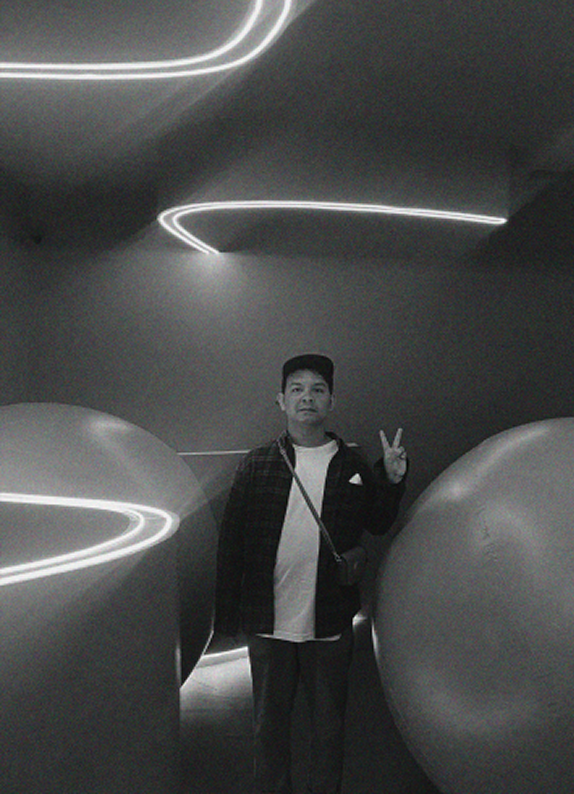

A creative spatial and experiential designer specializing in exhibitions, brand activations, and large-scale event environments across Southeast Asia. With hands-on experience in spatial storytelling, audience flow, and immersive brand experiences, Armen translates brand strategy into impactful physical spaces through 3D visualization, motion systems, and live visuals. Known for strong cross-functional collaboration, he works closely with creative, account, and event teams to deliver visually compelling and technically feasible experiences—from concept development to on-site execution.
